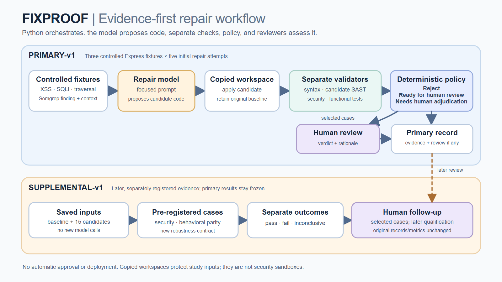

Did the target scanner finding disappear?
A persistent finding is not automatically a successful attack, and a resolved finding is not proof of complete security.
Evidence-first repair workflow
This read-only reference presents the frozen primary study, later supplemental tests, a separately versioned PATH-S06 extension, and separate human rationales for 15 saved repair candidates.
Loading the evidence boundary...
Architecture
Primary records stay frozen. Later testing adds a separate qualification instead of rewriting the original result.

Verified snapshot
Interpretation
A persistent finding is not automatically a successful attack, and a resolved finding is not proof of complete security.
Security, behavioral parity, and robustness have different oracles and denominators.
Original decisions and later follow-ups are shown separately, with their rationales preserved.
Frozen record
Rows count candidates whose complete registered primary suite passed, not individual test cases.
| Candidate | Target SAST | Security | Functional | Automated state | Original human | Later follow-up | Evidence |
|---|
Important: “0/5 target SAST resolved” means the target finding persisted in all five candidates. It does not mean the registered attacks succeeded.
Later evidence
The same 15 saved candidates were evaluated with predefined and frozen cases. Primary metrics were not changed.
| Candidate | Security P/F/I | Parity P/F/I | Robustness P/F/I | Nonpassing cases | Supplemental-v1 human | PATH-S06 extension | Evidence |
|---|
P/F/I means pass, fail, and inconclusive. The supplemental-v1 columns remain frozen. The PATH-S06 extension is a separate later layer and does not replace the five original inconclusive observations.
Claim boundary
The benchmark demonstrates evidence handling and review discipline, not population-level repair reliability.
Backup reference
The PDF preserves the matrices and rationales. The Excel workbook traces the counts to the recorded payloads, requests, responses, and outcomes.